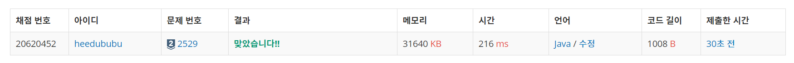

👀 문제
https://www.acmicpc.net/problem/2529
👊 도전
1. 설계
- DFS와 visit[]를 이용하여 숫자를 중복시키지 않으면서 부등호 조건에 맞는 숫자를 생성하여 ArrayList에 저장한다.
2. 구현 (성공 코드)
1
2
3
4
5
6
7
8
9
10
11
12
13
14
15
16
17
18
19
20
21
22
23
24
25
26
27
28
29
30
31
32
33
34
35
36
37
38
39
40
41
42
43
44
45
46
47
48
49
50
51
52
import java.util.ArrayList;
import java.util.Scanner;
/**
* @author HEESOO
*
*/
public class Main {
static int k;
static String[] array;
static boolean[] visit;
static ArrayList<String> list;
public static void dfs(int idx, int now, String num) {
if(idx==k) {
list.add(num);
return;
}
for(int i=0;i<=9;i++) {
if(visit[i]) continue;
if(array[idx].equals("<")) {
if(now<=i) {
visit[i]=true;
dfs(idx+1, i, num+i);
}
}
else {
if(now>=i) {
visit[i]=true;
dfs(idx+1, i, num+i);
}
}
visit[i]=false;
}
}
public static void main(String[] args) {
// TODO Auto-generated method stub
Scanner scan=new Scanner(System.in);
k=scan.nextInt();
array=new String[k];
for(int i=0;i<k;i++)
array[i]=scan.next();
list=new ArrayList<>();
for(int i=0;i<=9;i++) {
visit=new boolean[10];
visit[i]=true;
dfs(0, i, String.valueOf(i));
}
System.out.println(list.get(list.size()-1));
System.out.println(list.get(0));
}
}
3. 결과
 🤟 성공 🤟
4. 설명
- DFS를 이용하여 부등호 조건에 맞는 숫자를 생성한다
- 부등호를 저장할 array, 중복 숫자를 거르기 위한 visit 배열을 글로벌 선언한다.
- dfs()를 통해 숫자를 생성하고, list에 저장한다.
- dfs는 시작점(첫 번째 숫자)에 따라 모두 체크해줘야하므로 for문을 돌린다. now에 시작점 i, num 자리에도 i를 넘겨 현재까지 i가 만들어졌음을 보내준다.
- 이때 숫자는 0부터 차례대로 오름차순으로 생성되기 때문에 list에도 오름차순으로 저장된다. 따라서 list의 마지막에는 max값이, 처음에는 min값이 저장된다.
- dfs() 메소드를 만든다
- 파라미터 idx는 부등호 배열 array를 순회하는 인덱스이자, 순회가 끝나면 idx==k이므로 종료 조건이 된다. idx==k까지 살아있다면 k+1길이의 숫자 생성 완료된 것이므로 list에 저장후 종료한다.
- now는 이전에 선택된 숫자이다. 부등호 체크를 위해 파라미터로 넘겨준다.
- num은 현재까지 만들어진 숫자이다.
- for문을 통해 0~9순회하며 visit를 통해 방문하지 않은 숫자라면 부등호 조건을 체크하고, 맞다면 방문 체크(true)로 변경 후 재귀호출로 다음을 만든다. 이때 다음 부등호를 체크해야하므로 idx+1, 현재 선택된 숫자 i, i를 덧붙인 num+i를 파라미터로 넘긴다.
- dfs()호출이 끝난 후 다시 원래 복귀로 돌아왔다면, 다음 사용을 위해 현재 visit[i]=false 처리해준다.
👏 해결 완료!
참고
- 백준 2529번 부등호 :: 마이구미 https://mygumi.tistory.com/279